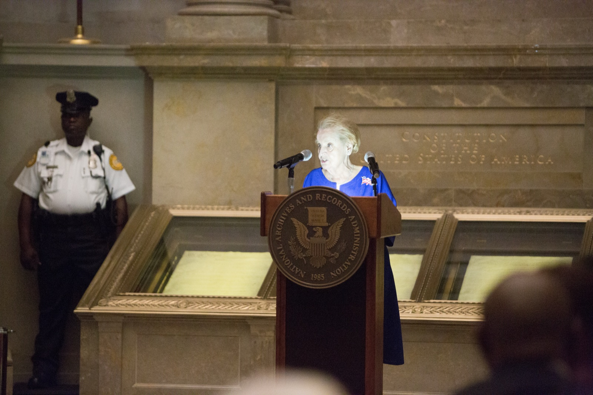
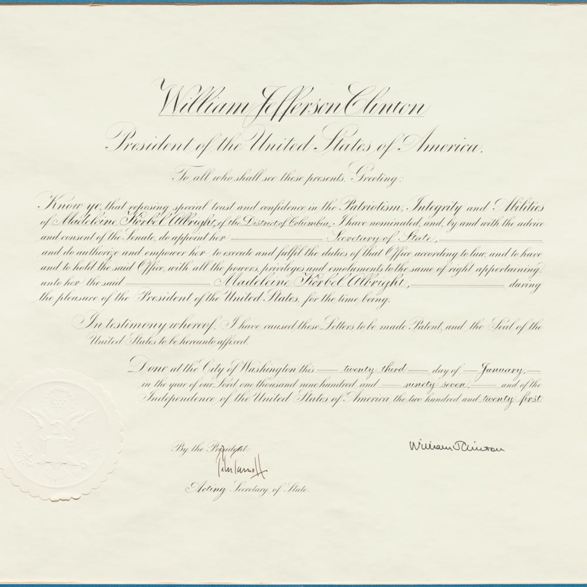

"When I arrived in New York that November day 50 years ago, I was excited but also scared. I didn't know whether I would be accepted."

Madeleine Albright
Madeleine Albright was a refugee twice before she was twelve — from Hitler, then from Stalin. Fifty years after her family steamed past the Statue of Liberty, she was Secretary of State, standing in a courtroom to welcome the country's newest citizens.
The document behind this story
Remarks at the Naturalization Ceremony for New Citizens, U.S. District Court, Washington, D.C., 10 November 1998 (as delivered) — Madeleine K. Albright; released by the Office of the Spokesman, U.S. Department of State, 1998-11-10.
The State Department released the full text of her remarks at the 1998 naturalization ceremony. It is the best single record of how she told her own immigration story — in her own words, to people taking the same oath she had taken.
When I arrived in New York that November day 50 years ago, I was excited but also scared. I didn't know whether I would be accepted. I didn't know whether the differences in the way I spoke and acted would leave me in America, but not of America. I shouldn't have worried. At its best, America's embrace is as broad as the country itself.
“Today marks a new beginning in your lives, and an ongoing chapter in the story of America which is, above all else, a story of immigrants.”Madeleine Albright to new citizens, U.S. District Court, Washington, D.C., 10 November 1998 (State Department transcript, item 7).
The story
Two escapes before the age of twelve
She was born Marie Jean "Madlenka" Korbel in Prague on 15 May 1937. Her father, Josef Korbel, was a Czechoslovak diplomat. When Nazi Germany occupied Czechoslovakia in 1939, the family fled to London, where she spent the war years as a small child in a city under bombardment.
They went home after the war. In February 1948 the Communists seized power, and the Korbels left again — this time for good. "Our native country of Czechoslovakia had been taken over by Communists loyal not to the Czech people, but to Joseph Stalin," she said fifty years later.
"In America, but not of America"
The family arrived in New York on 11 November 1948. She was eleven. "We steamed into New York Harbor, past the Statue of Liberty, with tears in our eyes and hope in our hearts," she remembered.
She also remembered the fear. "I didn't know whether the differences in the way I spoke and acted would leave me in America, but not of America." The Korbels settled in Denver, Colorado, where her father became a professor. The girl from Prague started calling herself Madeleine.
Citizen, then Secretary of State
She became a United States citizen in 1957, and graduated from Wellesley College with honors in political science two years later. She went on to earn a doctorate at Columbia University, worked for Senator Edmund Muskie and on President Carter's National Security Council, and taught at Georgetown University. In 1993 President Clinton made her the United States Ambassador to the United Nations.
On 23 January 1997 she was sworn in as the sixty-fourth Secretary of State — the first woman to hold the job. Because she was born abroad, she could never be President. This was as high as an immigrant could climb.
Weeks into the job, a newspaper's research showed her something her parents had never told her: her family was Jewish, and her grandparents and many other relatives had been murdered in the Holocaust. She had been raised a Catholic. She spent years afterwards tracing what had happened to them, and wrote about it in her book Prague Winter.
"A daughter of the region"
On 12 March 1999, at the Truman Library in Independence, Missouri, she received the documents that made the Czech Republic, Hungary and Poland members of NATO. The country she had fled as a child was now an ally of the country that had taken her in.
"As a daughter of the region," she told the audience, "I know many Americans have not always had the understanding of this region that they now do." The day, she said, would be remembered as the one when these countries "strode through NATO's open door."
Fifty years later, the oath again
On 10 November 1998 — fifty years, less one day, after she arrived — she and her sister renewed their oath of allegiance at a naturalization ceremony in Washington, D.C. She told the new citizens about three of them by name: a scientist from Albania, a woman from Cuba who wanted to vote in a free election for the first time, and a refugee from Ethiopia working two jobs.
He had told her that only in America could a refugee from Africa meet the Secretary of State. "Well, let me say, Mr. Kassa," she answered, "that only in America could a refugee girl from Central Europe become Secretary of State."
She came back to the subject for the rest of her life. In September 2016, at the age of seventy-nine, she spoke at a naturalization ceremony in the Rotunda of the National Archives, in front of the Constitution. She died in 2022.
The sources
Every fact on this page comes from one of these 14 items. Each links to the institution that holds it and gives that institution’s own rights wording.
-
Madeleine Albright speaks at a naturalization ceremony, National Archives, 14 September 2016
The anchor image: sixty-eight years after arriving as a refugee, she welcomes new citizens in front of the Constitution.
Rights, in the institution’s words: Access Restriction(s): Unrestricted. Use Restriction(s): Unrestricted.
-
Swearing-In Ceremony for Madeleine Albright as Secretary of State, Oval Office, 23 January 1997
The day she became the first woman to lead the State Department.
Rights, in the institution’s words: Access Restriction(s): Unrestricted. Use Restriction(s): Unrestricted.
-

Secretary Albright's Commission
The paper that made the appointment. The museum identifies it as a duplicate of the original commission.
DUPLICATE — the museum describes this as a duplicate of the original appointment commission.
Rights, in the institution’s words: This image is in the public domain and no permission is required to use it. Please credit the National Museum of American Diplomacy as the original source, and provide a link back to the item page where possible. Most of our items are donations, and we cannot always confirm the copyright or trademark status of photographs, prints, drawings, and other artistic works that may be depicted in these images.
-
Secretary Madeleine K. Albright at the Truman Library, Independence, Missouri, March 1999
The month her birth country joined NATO, at the library where the ceremony was held.
Rights, in the institution’s words: Access Restriction(s): Unrestricted. Use Restriction(s): Unrestricted.
-
speech transcript
Remarks at the Naturalization Ceremony for New Citizens, U.S. District Court, Washington, D.C., 10 November 1998 (as delivered)
Her own account of arriving in 1948, in full. Source of the opening line, the spotlight excerpt and the main quotation.
Rights, in the institution’s words: This is an official U.S. Government source for information on the WWW.
-
press statement
Secretary Albright Commemorates 50 Years in the United States
Dates the family's arrival to 11 November 1948, names the presiding judge, and counts 86 new citizens from 31 countries. Explains the old 10-vs-11 November confusion: the ceremony was the 10th, this statement the 11th.
Rights, in the institution’s words: This is an official U.S. government source for information on the World Wide Web.
-
speech transcript
Remarks on Accession of the Czech Republic, Hungary and Poland to NATO, Truman Presidential Library, 12 March 1999
'As a daughter of the region' — her own words on the day her birth country joined NATO.
Rights, in the institution’s words: As released by the Office of the Spokesman, U.S. Department of State.
-
news report
NATO: Alliance Formally Welcomes Three New Members
Independent confirmation of the date, place and ceremony.
Rights, in the institution’s words: (none located on the item page)
-
reference entry
Madeleine Korbel Albright — Biographies of the Secretaries of State
Birth name and date, citizenship in 1957, Wellesley 1959, Columbia Ph.D., UN 1993, sworn in 23 January 1997, died 2022.
Rights, in the institution’s words: (U.S. Government work; no restriction stated on the page)
-
news report
Albright Renews Her Oath
A third count of the new citizens that day: 97 from 31 countries. Used in the activity.
Rights, in the institution’s words: (none located on the item page)
-
newspaper article
Madeleine Albright didn't know she was Jewish until The Post told her
How she learned of her family's Jewish history in 1997, and that her grandparents died in the Holocaust.
Rights, in the institution’s words: All rights reserved.
-
book
Prague Winter: A Personal Story of Remembrance and War, 1937-1948
Her own book-length account of the war years and her family's fate. The place to go next.
Rights, in the institution’s words: In copyright.
-
finding aid
Madeleine Korbel Albright Papers (finding aid ms018034)
Her papers — 81,000 items — for anyone who wants to go deeper. Viewable only in person in Washington.
Rights, in the institution’s words: Restrictions apply governing the use, photoduplication, or publication of items in this collection.
-
wire report
Behind the Headlines: Albright - names of grandparents forever seared into my heart
A 1997 report of her response to the discovery, written at the time.
Rights, in the institution’s words: All rights reserved.
Questions to talk about
- Albright said she was afraid of being "in America, but not of America." What do you think the difference is? Have you, or someone in your family, ever felt it?
- Her family fled two different governments, nine years apart. How might leaving home a second time feel different from the first?
- She learned about her family's Jewish history from a newspaper, not from her parents. Why might parents keep a secret like that? Was it fair to her?
- In 1999 she welcomed the country she was born in into an alliance with the country she chose. What would that day have meant to her, personally and as Secretary of State?
- At the 1998 ceremony she talked about three new citizens instead of only herself. Why do you think she did that?
Things to try
- Compare two records of the same day. The State Department published two documents about the 10 November 1998 ceremony: the transcript of her speech (item 7) and a press statement issued the next day (item 8). Read both. The statement says 86 people were naturalized; the speech says 100; an Associated Press report said 97. Which would you trust, and why? What does this tell you about using even official sources?
- Your family's arrival. Albright remembered exactly what she saw as her ship entered New York Harbor. Interview someone in your family, or a friend, about the day they or their ancestors arrived in a new country. Write down one thing they saw, one thing they felt, and one thing they were afraid of. You can share the story with the Immigrant Hall of Honor's storytelling project.
Interviews and media from other institutions
First-person recordings and expert perspectives held by other museums, archives and media organisations. Each one links to the institution that holds it. A recording is embedded here only when its holder has given permission.
-
Oral historyPlaceholder — not a real source
TODO: title of an oral history interview
TODO: interviewer (interviewer) · TODO: holding institution · TODO
TODO: one sentence. Layout example of a link-only source.
Link only: the recording stays with TODO: holding institution. Link to the holder’s page: TODO